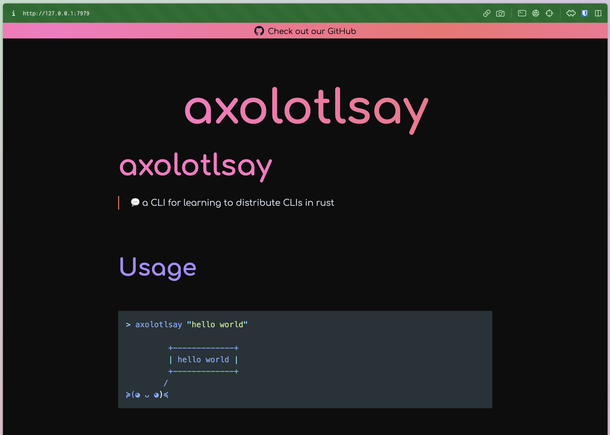

Introduction
Oranda is a tool for generating beautiful landing pages for your projects.
It can:
- Automagically generate a webpage based off your project readme file
- Include arbitrary Markdown pages
- Generate
mdbookbooks for you - Integrate with cargo-dist to show downloadable and installable artifacts
- Provide integration with several web analytics providers
and more!
This is the oranda documentation, where we explain how to use the tool in detail. Use the sidebar to the left to navigate between pages.
Caveat emptor! oranda is still alpha-quality software! Things might change in a breaking way, especially the configuration format (although we're working hard on stabilizing it)
Install
There's lots of ways to install oranda!
The Quickest Way
On the oranda website, there's a one-liner command you can execute for your OS that'll download and install oranda for you, without any further hassle!
Install Prebuilt Binaries With cargo-binstall
cargo binstall oranda
Build From Source With Cargo
cargo install oranda --locked --profile=dist
--profile=distis the profile we build our shippable binaries with, it's optional.
--lockedasks Cargo to respect the lockfile, improving build reproducibility at the the cost of not getting any bugfixes from newer releases of its dependencies.
Download Prebuilt Binaries From Github Releases
Install With NPM
npm install oranda
Install With Nix
oranda is available in nixpkgs, and also as a nix flake. This installer is currently experimental, so we don't recommend you use it in production workflows.
On a system with nix installed, you can run
nix-env -i oranda
or to install from GitHub using the flake,
nix profile install github:axodotdev/oranda
Quickstart
After you've installed oranda, it's time to give it a spin. Make sure you can execute the
oranda command, its output should look something like this:
$ oranda
üéÅ generate beautiful landing pages for your projects
Usage: oranda [OPTIONS] <COMMAND>
Commands:
build
dev
serve
help Print this message or the help of the given subcommand(s)
Options:
-h, --help Print help (see more with '--help')
-V, --version Print version
GLOBAL OPTIONS:
--verbose <VERBOSE> How verbose logging should be (log level) [default: warn] [possible values:
off, error, warn, info, debug, trace]
--output-format <OUTPUT_FORMAT> The format of the output [default: human] [possible values: human, json]
Basic Setup
oranda is designed to be a tool you can simply drop into an existing project. For the purposes of this
guide, we're going to use axolotlsay, a simple CLI project, but you can use one of your own
projects, or even set up a new one from scratch! The only hard requirement oranda has is for your
project to have a readme file (README.md).
The easiest way to get a feedback loop going with oranda is to move into the directory and run oranda dev:
cd axolotlsay
oranda dev
oranda dev is a command that will automatically recompile your oranda build when you change
one of the files relevant to it. It also launches a file server that'll allow you to look at the output -
if you open localhost:7979, you'll see something like this:

oranda has picked up on our readme file and converted it into a static page! How nice!
Beyond the Basics
If we want to work with the more advanced features that oranda offers, we'll have to create a configuration file.
The default location of this file is oranda.json in the same directory where your project manifest is located.
You can view a full reference of the configuration schema here. Let's start by making the simplest and highest impact change: telling oranda that our project has releases and changelogs that it should make pages for!
axolotlsay uses GitHub Releases, and oranda knows how to handle those, so all it needs is the URL
to our repository and permission to do so. As it turns out, oranda already has the URL, because it
also knows how to find and read Cargo.toml files, and ours specifies
repository = "https://github.com/axodotdev/axolotlsay".
So let's tell oranda it's ok to look through our GitHub Releases by enabling the "changelog" feature:
{
"components": {
"changelog": true
}
}
If you now build again, it should look like this:

oranda pulled our project's releases from GitHub automatically, without us having to specify any further configuration than enabling the changelog setting!
Further Steps
For more specific configuration, check out the configuration page and its sub-pages.
Hosting
On GitHub pages
When hosting on Github pages, it is often the case that your site will be served from a non-root url such as myorg.github.io/reponame.
If you are serving your site from this style of URL, you'll need to add the reponame as a path_prefix to your Oranda config. This will allow oranda to properly configure all chlid links (such as images or additional pages) of your page to be properly name spaced."
Let's say your website is hosted at https://myorg.github.io/reponame/, to fix the links add the following to your oranda.json
{
"build": {
"path_prefix": "reponame"
}
}
Using GitHub Actions
You can set up a simple workflow to automatically do this GitHub Pages deploy for you. Take a look at Oranda's own web.yml file for reference:
# Workflow to build your docs with oranda (and mdbook)
# and deploy them to Github Pages
name: Web deploy
# We're going to push to the gh-pages branch, so we need that permission
permissions:
contents: write
# What situations do we want to build docs in?
# All of these work independently and can be removed / commented out
# if you don't want oranda/mdbook running in that situation
on:
# Check that a PR didn't break docs!
#
# Note that the "Deploy to Github Pages" step won't run in this mode,
# so this won't have any side-effects. But it will tell you if a PR
# completely broke oranda/mdbook. Sadly we don't provide previews (yet)!
pull_request:
# Whenever something gets pushed to main, update the docs!
# This is great for getting docs changes live without cutting a full release.
#
# Note that if you're using cargo-dist, this will "race" the Release workflow
# that actually builds the Github Release that oranda tries to read (and
# this will almost certainly complete first). As a result you will publish
# docs for the latest commit but the oranda landing page won't know about
# the latest release. The workflow_run trigger below will properly wait for
# cargo-dist, and so this half-published state will only last for ~10 minutes.
#
# If you only want docs to update with releases, disable this one.
push:
branches:
- main
# Whenever a workflow called "Release" completes, update the docs!
#
# If you're using cargo-dist, this is recommended, as it will ensure that
# oranda always sees the latest release right when it's available. Note
# however that Github's UI is wonky when you use workflow_run, and won't
# show this workflow as part of any commit. You have to go to the "actions"
# tab for your repo to see this one running (the gh-pages deploy will also
# only show up there).
workflow_run:
workflows: ["Release"]
types:
- completed
# Alright, let's do it!
jobs:
web:
name: Build and deploy site and docs
runs-on: ubuntu-latest
steps:
# Setup
- uses: actions/checkout@v3
with:
fetch-depth: 0
- uses: dtolnay/rust-toolchain@stable
- uses: swatinem/rust-cache@v2
# Install and run oranda (and mdbook)
# This will write all output to ./public/ (including copying mdbook's output to there)
- name: Install and run oranda
run: |
curl --proto '=https' --tlsv1.2 -LsSf https://github.com/axodotdev/oranda/releases/download/v0.1.0-prerelease.5/oranda-installer.sh | sh
oranda build
# Deploy to our gh-pages branch (making it if it doesn't exist)
# the "public" dir that oranda made above will become the root dir
# of this branch.
#
# Note that once the gh-pages branch exists, you must
# go into repo's settings > pages and set "deploy from branch: gh-pages"
# the other defaults work fine.
- name: Deploy to Github Pages
uses: JamesIves/github-pages-deploy-action@v4.4.1
# ONLY if we're on main (so no PRs or feature branches allowed!)
if: ${{ github.ref == 'refs/heads/main' }}
with:
branch: gh-pages
# Gotta tell the action where to find oranda's output
folder: public
token: ${{ secrets.GITHUB_TOKEN }}
single-commit: true
Elsewhere
oranda is, effectively, a static site generator. It outputs HTML, CSS and JavaScript files. These can all be hosted on a looooot of different platforms, in fact, too many for us to enumerate here! You can use Vercel, Netlify, any GitHub pages competitor, or you can plop it on your own server that runs nginx, Apache httpd, Caddy, or anything else!
You can, in fact, also use the CI example linked above and modify it to deploy to different platforms. If you do, we'd love to hear about it!
Adding static assets
If you reference static assets in your Markdown, you'll need to place them all inside a directory at the same level as
your project manifest file called static. This is because Oranda currently doesn't know about each indidivual asset,
and instead just copies the folder where they're contained.
In your Markdown, you'll need to refer to the assets in this directory. For example:

If you want to use a custom-named directory you can configure this in your oranda.json, like so:
{
"build": {
"static_dir": "assets"
}
}
In this case the assets directory will be used instead of the default static directory.
Command Line
Oranda currently has three subcommands that work in similar, but nuanced ways.
Oranda supports some common options on each command:
--verbose. This controls the verbosity level for logs.--output-format. If you want JSON for processing it with a machine, this is where you'd toggle it.
oranda build
This command builds your oranda site. You can specify:
- The project root (
--project-root), in case you want to build from another directory - The config path (
--config-path), if your configuration file is not./oranda.json
oranda serve
This command launches a small axum-powered server that serves your generated oranda site.
Importantly, this does not build your site for you. If it can't find a build in the public/ directory,
it will error and exit. You can set the port for the server to be launched using the --port option.
oranda dev
This command basically combined oranda build and oranda serve, with the added benefit of watching for changes
and recompiling automatically. When you launch, what happens is this:
- Oranda builds your site (unless you told it not to)
- Oranda launches a server similar to
oranda serve - Oranda starts watching its relevant files for changes, and will rerun the build process when something changes
Oranda's build can have a lot of side-effects (reading/writing files, but also talking to the GitHub API), and as such, we have to take care to only run the build process when relevant files change. These files are:
- Your project manifest files (
Cargo.toml,package.json) - Your oranda configuration file
- Any mdbook source files you may have
- Your readme, and additional files specified in the configuration
- Any other paths you give it using
--include-paths
This command also support several options:
--portto set a custom port for the file server--project-rootto change the root directory from where your site will be built--config-pathto specify a custom path for your oranda config--no-first-buildto skip the first step mentioned above where oranda builds your site before starting the watch process-i,--include-pathsto specify custom paths for oranda to watch
Tips and Tricks
Hiding the Markdown title
Oranda breaks out your project's title into its own header, which can be annoying if you've started your own README.md with something like this:
# myprojectname
Blah blah blah etc
If you build your oranda site like this, the title will appear twice! oranda supports a special class called oranda-hide
that you can wrap your title (or whatever you don't want to appear on the page) with, like this:
<div class="oranda-hide">
# myprojectname
</div>
Blah blah blah etc
Keep in mind the line breaks before and after the HTML, otherwise the Markdown parser may not function correctly.
Configuration
- Configuration
- Manifest file:
oranda.json - Project Configuration
nameüì¶ - the name of your applicationversionüì¶ - current version of your projectdescriptionüì¶ - brief description of your projecthomepageüì¶ - url to the homepage of your projectrepositoryüì¶ - url to the repository of your projectreadme_path- relative custom path to your project's readme filelicenseüì¶ - license of your project (in SPDX format)
- Build Configuration
dist_dir- path to where built output should be placedstatic_dir- path to a directory containing static assetspath_prefix- a URL fragment to prepend to URLs, useful if hosting from a subfolderadditional_pages- additional pages to be rendered and linked to
- Marketing Configuration
- Theme/Style Configuration
theme- change oranda's CSS themesyntax_theme- change the syntax theme used by orandaadditional_css- additional CSS to insert into your pagesoranda_css_version- custom version of oranda's built-in CSS to uselogo- custom site logofavicon- custom site favicon
- Components Configuration
- Manifest file:
üì¶ = automatically collected from your package metadata!
oranda is designed to work with no configuration- for projects with a
package.json or Cargo.toml, oranda will grab the project metadata it needs
from your project manifest file.
If you project has both a Cargo.toml and a package.json we recommend defining
project metadata fields like name in your oranda.json.
Manifest file: oranda.json
If you'd like to customize your project you can do so in a oranda.json file.
For example:
{
"build": {
"path_prefix": "oranda"
},
"styles": {
"theme": "axodark",
"favicon": "https://www.axo.dev/favicon.ico"
},
"marketing": {
"social": {
"image": "https://www.axo.dev/meta_small.jpeg",
"image_alt": "axo",
"twitter_account": "@axodotdev"
},
"analytics": {
"plausible": {
"domain": "opensource.axo.dev"
}
}
},
"components": {
"changelog": true,
"artifacts": {
"package_managers": {
"preferred": {
"npm": "npm install @axodotdev/oranda --save-dev",
"cargo": "cargo install oranda --locked --profile=dist"
},
"additional": {
"npx": "npx @axodotdev/oranda",
"binstall": "cargo binstall oranda",
"nix-env": "nix-env -i oranda",
"nix flake": "nix profile install github:axodotdev/oranda"
}
}
}
}
}
NOTE: All paths in
oranda.jsonare relative to theoranda.jsonfile. We recommend placing this file in the same directory as your project manifest, such as apackage.jsonorCargo.toml.
Project Configuration
name
Added in version 0.1.0.
- Default value: Project manifest
namefield
Your project's name.
version
Added in version 0.1.0.
- Default value: Project manifest
versionfield.
Your project's current version.
description
Added in version 0.1.0.
- Default value: Project manifest
descriptionfield
Your project's description.
homepage
Added in version 0.1.0.
- Default value: Project manifest
homepagefield
Your project's homepage.
repository
Added in version 0.1.0.
- Default value: Project manifest
repositoryfield
Your project's Git repository. Right now, only the HTTPS URL works.
readme_path
Added in version 0.1.0.
- Default value: A variation of the standard
README.md
The path to your project's readme file.
license
Added in version 0.1.0.
- Default value: Project manifest
licensefield.
Your project's license.
Build Configuration
dist_dir
Added in version 0.1.0.
- Default value:
public/
The directory where your static files will be output to. This must be relative to the oranda.json file.
static_dir
Added in version 0.1.0.
- Default value:
static/
Static content that oranda will copy to its output folder. This must be relative to the oranda.json file.
path_prefix
Added in version 0.1.0.
If you're hosting oranda on a nested path (e.g. mysite.cool/myproject), you should set path_prefix to
myproject in your configuration in order for oranda to generate correct links.
additional_pages
Added in version 0.1.0.
An object of additional Markdown pages that you'd like to be included. All of these will appear in the site header. More information
Marketing Configuration
analytics
Added in version 0.1.0.
Configuration for page analytics.
social
Added in version 0.1.0.
Options useful for SEO features.
Style Configuration
theme
Added in version 0.1.0.
- Default value:
dark
Choose which theme to use. Read more about themes.
syntax_theme
Added in version 0.1.0.
- Default value:
materialtheme.
Choose which syntax theme to use for code blocks.
additional_css
Added in version 0.1.0.
Add extra CSS to your pages' header. Read more in the theme documentation.
oranda_css_version
Added in version 0.1.0.
Specify a version of the embedded oranda CSS. This can be used to opt into newer CSS releases that don't have an oranda release associated with them yet.
logo
Added in version 0.1.0.
Path to a custom logo to be shown in your website header.
favicon
Added in version 0.1.0.
Path to a custom favicon.
Components Configuration
artifacts
Added in version 0.1.0.
Configuration for enabling downloadable artifacts, as well as the cargo-distintegration.
More information
mdbook or md_book
Added in version 0.1.0.
changelog
Added in version 0.1.0.
Enable changelog generation. More information
funding
Added in version 0.1.0.
Allows you to tweak or disable oranda's funding page. Read more here.
Configuration before 0.1.0
Before version 0.1.0 (the last stable version was/is 0.0.3, the last prerelease was/is 0.1.0-prerelease7), the configuration format looked like this:
{
"name": "oranda",
"description": "generate static sites for your dev tools",
"dist_dir": "oranda_out",
"homepage": "https://oranda.axo.dev",
"static_dir": "static",
"no_header": false,
"readme_path": "dev/README.md",
"repository": "https://github.com/axodotdev/oranda",
"additional_pages": {
"Another page": "dev/additional.md"
},
"favicon": "https://www.axo.dev/favicon.ico",
"analytics": {
"plausible": {
"domain": "tools.axo.dev/oranda"
}
},
"social": {
"image": "https://www.axo.dev/meta_small.jpeg",
"image_alt": "axo",
"twitter_account": "@axodotdev"
},
"artifacts": {
"cargo_dist": true
},
"logo": "assets/oranda.png",
"license": "MIT OR Apache-2.0",
"mdbook": false,
"path_prefix": "oranda",
"styles": {
"theme": "axo_dark"
},
"funding": {
"preferred_funding": "github"
},
"changelog": true
}
Artifacts & cargo-dist
oranda has first-class support for handling releases generated by cargo-dist. It can even detect the user's platform and recommend the best installer/archive to use!
Artifact settings are managed in the artifacts key in your oranda config. This is what an example config looks like:
{
"components": {
"artifacts": {
"cargo_dist": true,
"package_managers": {
"npm": "npm install @axodotdev/oranda --save-dev",
"npx": "npx @axodotdev/oranda",
"crates.io": "cargo install oranda --locked --profile=dist",
"binstall": "cargo binstall oranda"
}
}
}
}
Enabling cargo-dist
Enabling cargo-dist support is as simple as settings artifacts.cargo_dist to true. This will have the following effects:
- oranda will attempt to find GitHub releases generated by
cargo-dist - A new "Install" page will be generated, containing all artifacts and installers for the latest version
- A section to quickly install the latest release for the user's current platform will be added to the homepage, provided that
your
cargo-distconfiguration includes any installers
Adding package manager installation instructions
You can add custom installation instructions for package managers or package manager-esque methods using the
artifacts.package_managers key. This is what the above example looks like:

Additional Pages
If you have extra Markdown files you'd like to link directly as root pages on your generated website, you can
use the additional_pages option to list them.
The option's format is an object with the human-readable page name as keys, and the path to the file as values. Example:
{
"build": {
"additional_pages": {
"Another page": "./AnotherFile.md"
}
}
}
Analytics
When it comes to analytics, oranda gives you a simple interface to add your scripts and make sure you collect analytics.
Right now we support the following analytics providers:
To add any of these, add the required configuration under the analytics key:
Google Analytics
{
"marketing": {
"analytics": {
"google_analytics": {
"tracking_id": "String"
}
}
}
}
Plausible
{
"marketing": {
"analytics": {
"plausible": {
"domain": "String",
"script_url": "Optional string for self hosted"
}
}
}
}
Fathom
{
"marketing": {
"analytics": {
"fathom": {
"site": "String"
}
}
}
}
Unami
{
"marketing": {
"analytics": {
"unami": {
"website": "String",
"script_url": "String"
}
}
}
}
Changelogs
oranda supports reading your project's changelogs from GitHub releases. You can enable this by setting changelog to true:
{
"components": {
"changelog": true
}
}
This will result in a new "Changelog" page being generated. Changelogs are pulled directly from GitHub releases. If
you're using the cargo-dist integration, oranda will attempt to parse a CHANGELOG.md-like file for
the changelogs instead.
NOTE: We're working on getting changelog parsing from a
CHANGELOG.mdfile as a default feature, without requiring use ofcargo-dist!
mdbook support
oranda can generate mdbooks for you. If you've already worked with mdbook, it's as simple as pointing oranda
at your book directory using the mdbook.path option:
{
"components": {
"mdbook": {
"path": "./docs"
}
}
}
This will cause oranda to automatically recompile your book for you, which will be served at the yoursite/book/ URL.
oranda dev will also be watching this directory.
mdbook quickstart
If this is the first time you're working with mdbook, these are the minimal steps you'd need before editing the oranda config. After you've installed the mdbook tool, you can generate a new book scaffold:
mdbook init docs # replace docs with your preferred directory
You can either use oranda dev or mdbook serve docs/ to have a preview for your mdbook.
Social
In order to help with SEO, there are a couple of options you can use.
{
"marketing": {
"social": {
"image": "used as the share image for social media",
"image_alt": "alt for said image",
"twitter_account": "twitter account for the website"
}
}
}
Theming
Predefined themes
Oranda comes with four default themes:
- Light
- Dark
- Axo Light (
axo_lightoraxolight) - Axo Dark (
axo_darkoraxodark) - Hacker
- Cupcake
You can change the theme by adding the styles.theme key to your oranda.json:
{
"styles": {
"theme": "hacker"
}
}
Dark is the default theme.
Customizing Themes
Themes can be further customized by adding extra CSS.
Additional CSS can be added using the styles.additional_css key.
{
"styles": {
"additional_css": ["./local/file.css", "http://www.remote.dev/file.css"]
}
}
Note: Remote files will be copied and the copy served locally, so once a link is updated, the site must be regenerated for changes to take effect.
Adding CSS
Oranda's CSS makes use of cascade layers to scope CSS and make it simpler to override styles. To override themed styles, say on a <p> element, place it inside a layer called overrides.
@layer overrides {
p {
color: aquamarine;
}
}
Alternately, CSS that is not defined within a layer has precedence over all layered CSS, so this will also work.
p {
color: aquamarine;
}
Dark vs. Light
When the dark theme is selected, a dark class is added to the page, and styles to be applied in dark mode only can include this selector. For instance,
.dark p {
color: aquamarine;
}
Will create paragraphs colored aquamarine in dark mode only.
Adding Classes
When there are specific elements you would like to add to your pages, these can be added into Markdown files as raw HTML with class selectors that you can target with your CSS.
<!-- README.md -->
## A Different Kind of Box
<div class="my-border-class">
<p>An outlined box</p>
</div>
.my-border-class {
padding: 1rem;
border: 6px dotted seagreen;
}
Creating a New Theme
Currently, to create a new theme, you need to follow the directions above in "Customizing Themes" and overwrite the given CSS. We recommend continuing the layer approach and placing overrides in the overrides layer and then adding a new named layer for your theme.
The ability to add a different theme directly will be included in future releases. Following the layers approach will make it simpler to transition your theme.
Theme Previews
Here you can see what themes look like without having to set up oranda yourself.
These previews are generated by running oranda on itself.
Dark (default)

Light

Axo Dark

Axo Light

Hacker

Cupcake

Funding page
Oranda has the capability of reading information from your GitHub funding file, and
automatically writing a page based on it. Unless you disable it by passing
"funding": false in the oranda config file, oranda will search your project for
a .github/FUNDING.yml file, and generate a page based off of it. You can read
more about the format of this file on GitHub's docs.
Oranda will display your different sponsor/funding links next to each other, but if have a "main" funding option, you can set the following configuration setting:
{
"components": {
"funding": {
"preferred_funding": "github"
}
}
}
Make sure this key corresponds to one of the possible entries in the FUNDING.yml
file.
If you want to display additional information or context, oranda can also include
the contents of a top-level funding.md Markdown file. Its contents will be translated
into HTML and displayed on the Funding page as well.
Both of the YAML and Markdown file paths can be customized as such:
{
"components": {
"funding": {
"md_path": "myfunding.md",
"yml_path": "misc/funding.yml"
}
}
}
oranda's funding parsing and site generation are currently an experiment into how to better integrate common funding methods into your tools' websites. If you have any feedback on how we could do things better, let us know on Discord or GitHub!